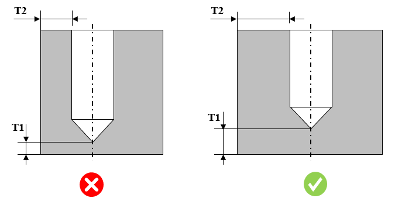

ドリル加工された穴面と対応する壁面との間の最小ドリル貫通部肉厚は、ユーザーが指定した値以上でなければなりません。
最小ドリル貫通部肉厚は、ドリル加工時に、加工された穴面と対応する壁面との間で破損が発生するのを防ぐために必要です。
一般的なガイドラインでは、最小ドリル貫通部肉厚は 5 mm 以上とすることが推奨されています。
T1 の設定では、対応するフィールドで演算子と値を変更できます。
T2 の設定では、板厚を絶対値として評価するか、穴径に対する比率として評価するか、またはその両方を選択できます。
例えば、T2 = 0.5 × 直径 + 0.5 mm
T2 を直径の比率として測定するには、ユーザーはドロップダウンをクリックして比率（Ratio）を選択する必要があります。選択すると、直径が自動的に 2 番目のドロップダウンに表示されます。
デフォルトでは、値は 5 mm に設定されています。ユーザーは、このデフォルトで設定された値を編集できます。

ここでは、
T1 = 底面からの最小ドリル貫通部肉厚
T2 = 側面からの最小ドリル貫通部肉厚
注記：
最大許容ドリル径を超える直径を持つ穴は、本ルールの対象外とします。
このルールは、アセンブリレベルの解析にも対応しています。
本ルールでは、テーパ穴はサポートされていません。
このルールは、DFMPro 設定 に基づき、トップレベルのアセンブリ部品に対して実行できます。